Перейдите в репозиторий воркшопа, и нажмите кнопку Fork в правом верхнем углу.
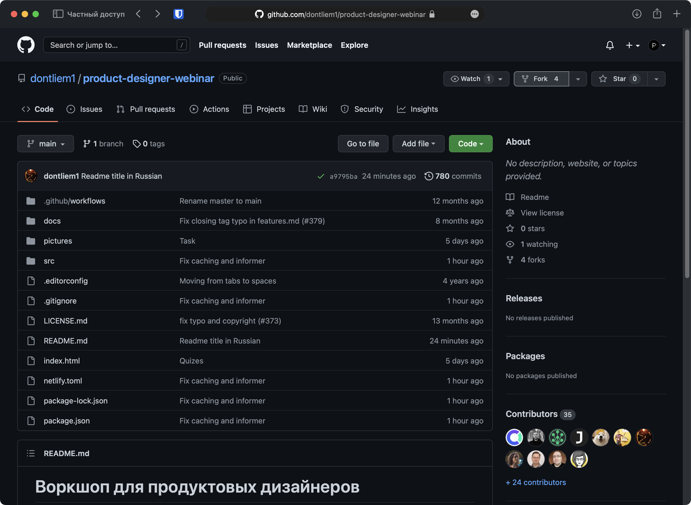
В открывшемся окне нажмите Create fork.
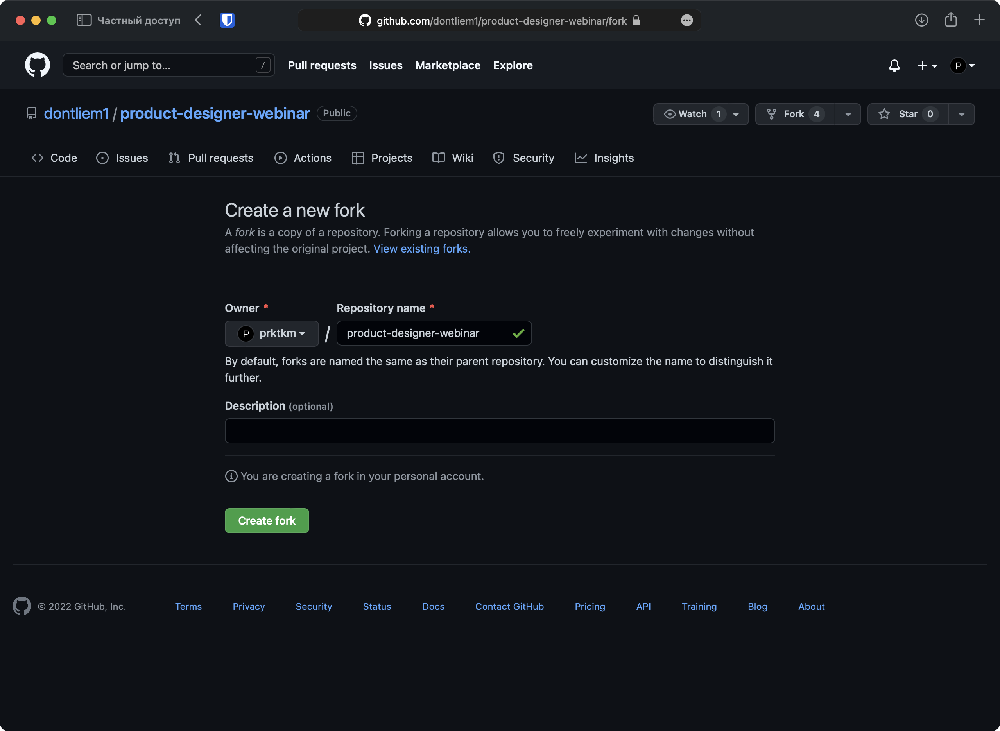
На странице своей копии репозитория нажмите на точку . на клавиатуре, чтобы вызвать веб-версию VS Code, и дождитесь окончания загрузки
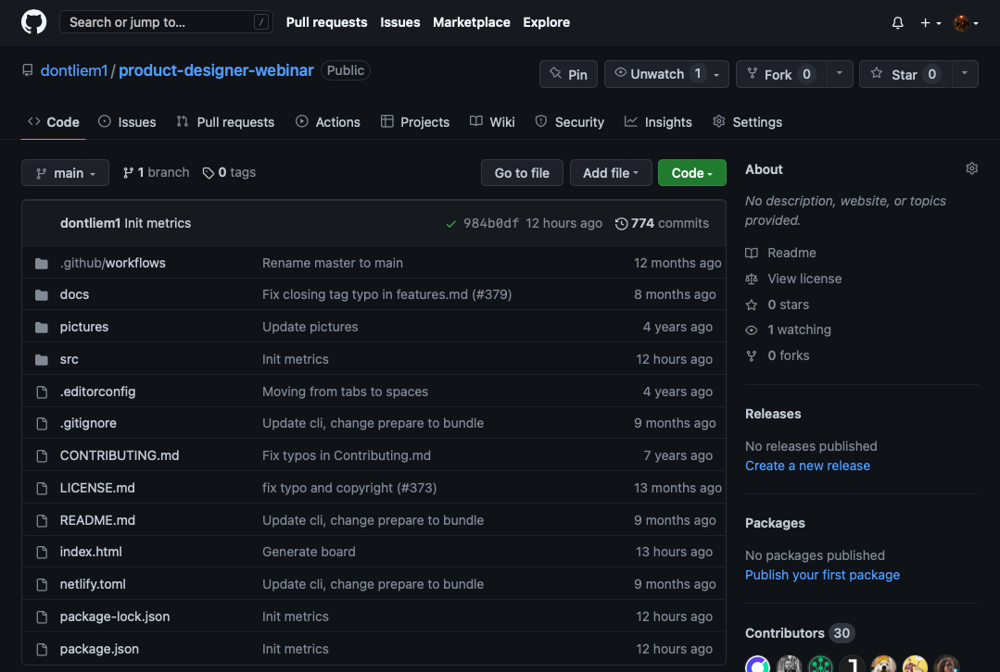
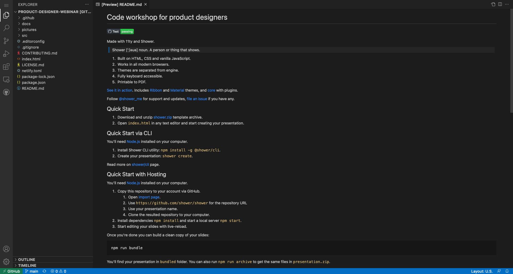
В левом нижнем углу нажмите на main и создайте новую ветку Create new branch, написав по-английски свою фамилию/ник и переключитесь на неё Switch to branch
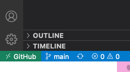
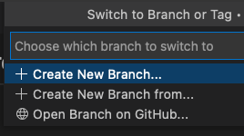
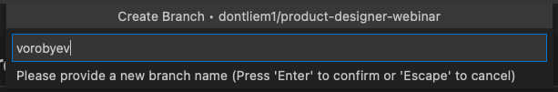
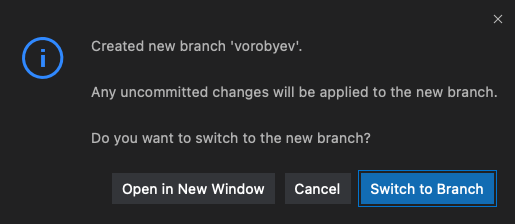
Убедитесь, что в левом нижнем углу теперь отображается ваша ветка
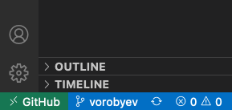
В дереве файлов слева создайте копию файла example.md в папке src/30.08.22, нажав на файле правой кнопкой мыши, и выбрав Copy (Копирование), а затем нажав правой кнопкой на папке 30.08.22 и выбрав Paste (Вставить)
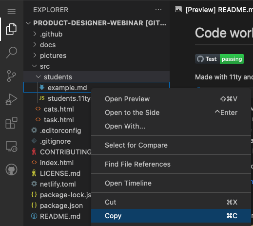
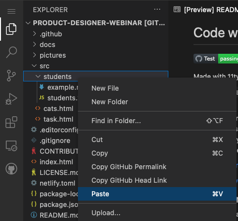
Переименуйте получившийся файл также как ветку, нажав на нём правой кнопкой мыши и выбрав Rename (Переименование). В этом примере, так как ветка называлась словом vorobyev, мы ввели его и нажали Enter
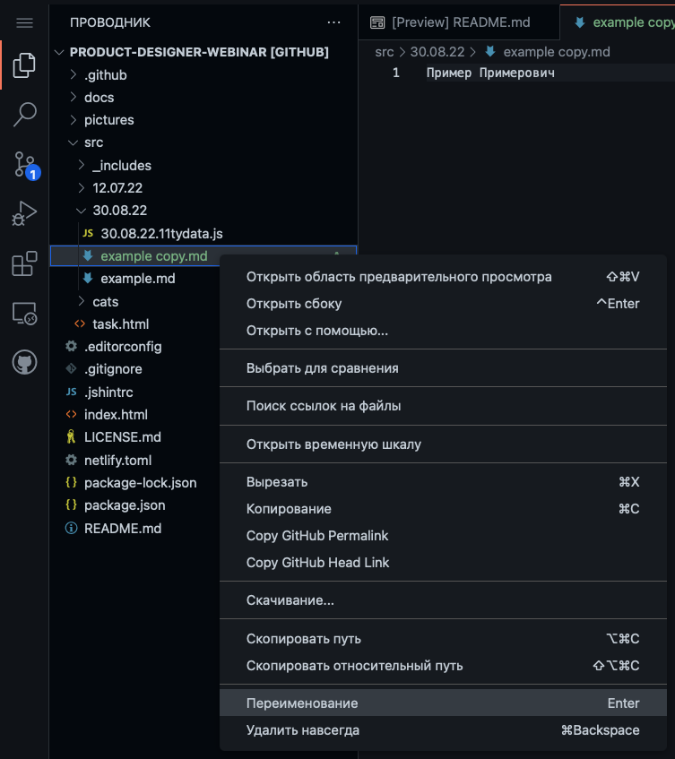
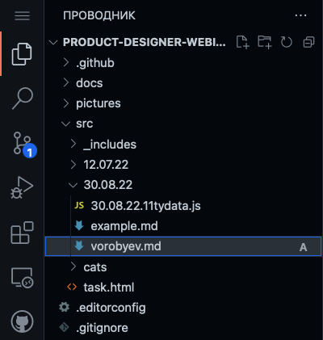
Замените содержимое файла, введя своё имя/ник
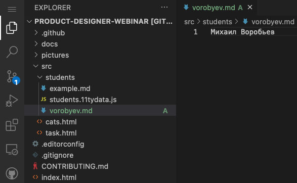
На вкладке слева Source Control (Система управления версиями) наведите курсор на наш новый файл и нажмите на появившийся + справа. Введите в поле Message сверху сообщение для коммита и нажмите на галочку ✓
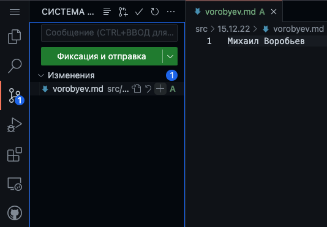
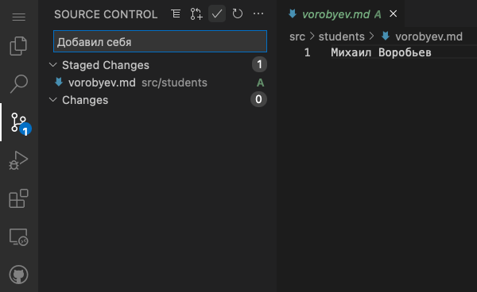
Нажмите на кнопку Create pull request (вторая после заголовка). В открывшейся вкладке пролистайте вниз и нажмите Create.
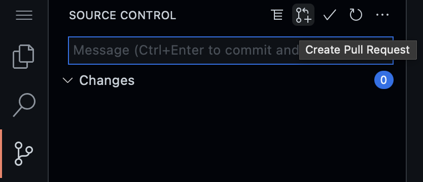
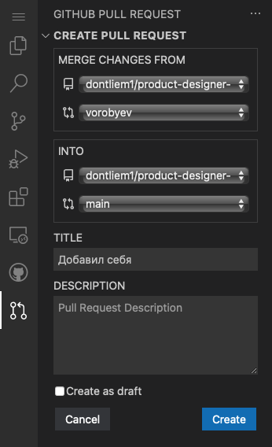